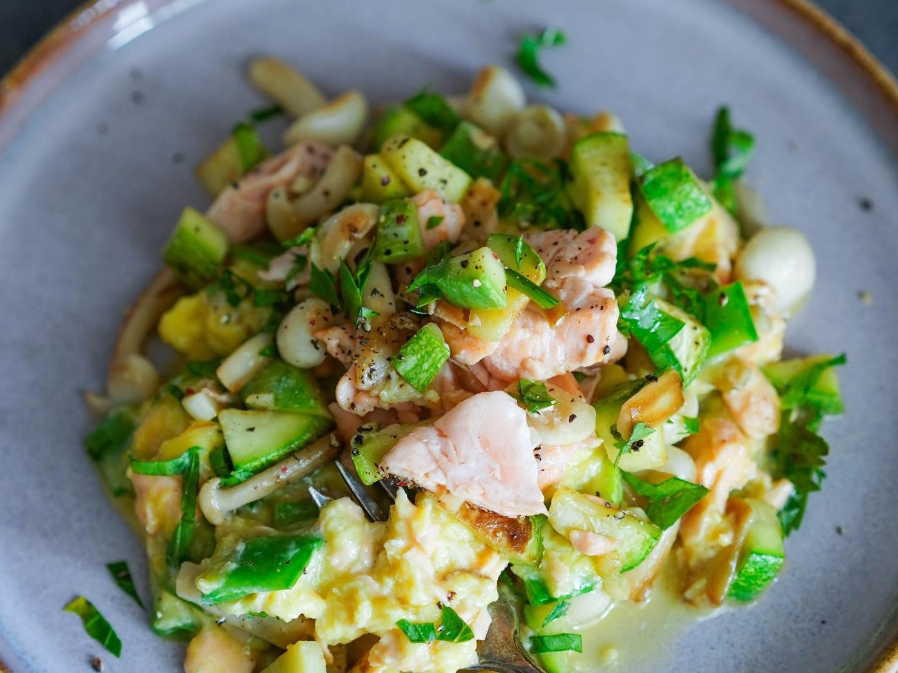

Изысканное блюдо, которое подойдет даже для романтического бранча. Манжту — это плоский стручковый горошек, в котором не развиты плоды и отсутствует жесткий слой внутри; используются сами нежные стручки — сочные, хрустящие, сладковатые, с легким гороховым вкусом.